# Load datasets
purchases <- read_csv("data/amazon-purchases.csv")
survey <- read_csv("data/survey_train_test.csv")
purchases <- purchases |> clean_names(sep_out = ".")
survey <- survey |> clean_names(sep_out = ".")Stats 101C Regression Final
Introduction
Research shows that factors such as income, age, gender, and household composition often influence spending behavior and product choice (U.S. Bureau of Labor Statistics). This background makes us interested to see if online spending is associated with variables such as income, education, age, and household sizes. The household size could be associated with how often and how many products are typically purchased but the different demographics of the customer or household could be associated with the purchase category. Personal habits and factors related to personal health could also place an influential role in purchasing behavior. These variables are all plausible predictors of online spending behavior.
Preprocessing
## Umbrella grouping for categories
# regex keywords -> umbrella
# 1. Baby & Kids
pat_baby <- "BABY|INFANT|DIAPER|NURSERY|STROLLER|CRIB|PACIFIER|WIPE|CAR_SEAT|HIGH_CHAIR|SAFETY_GATE|BREAST_PUMP|KIDS_ROOM|TEETHER|NOISE_MACHINE|TRAMPOLINE|COLLAPSIBLE_PLAY_STRUCTURE|CHANGING_PAD"
# 2. Video Games
pat_video_games <- "VIDEO_GAME|CONSOLE|CONTROLLER|NINTENDO|XBOX|PLAYSTATION|GAMING|GAME_BOY|DIGITAL_GAME|VIRTUAL_REALITY_HEADSET"
# 3. Electronics
pat_electronics <- "COMPUTER|LAPTOP|TABLET|PHONE|MOBILE|WIRELESS|HEADPHONE|SPEAKER|CAMERA|AUDIO|VIDEO|TV|TELEVISION|MONITOR|SCREEN|PROTECT|CABLE|CHARGER|ADAPTER|POWER|BATTERY|MOUSE|KEYBOARD|DRIVE|MEMORY|USB|PRINTER|DEVICE|CASE|COVER|FLASH|STRIP|DIGITAL|REMOTE|SWITCH|FILAMENT|COMPONENT|HUB|MULTIPORT|CAMCORDER|FILM|MOUNT|ELECTRONIC|ROUTER|NETWORK|SOFTWARE|ANTENNA|RADIO|RECEIVER|CALCULATOR|ALARM|MODEM"
# 4. Grocery & Food
pat_grocery <- "FOOD|GROCERY|SNACK|CANDY|CHOCOLATE|BEVERAGE|COFFEE|TEA|JUICE|WATER|MEAT|DAIRY|SPICE|SAUCE|PANTRY|CEREAL|OIL|VINEGAR|COOK|DRINK|FRUIT|BREAD|POULTRY|HERB|NOODLE|SOUP|CRACKER|STEW|FLAVOR|NUT|SEED|LEGUME|JERKY|SYRUP|GUM|BUTTER|MILK|BAKE|BAKING|FLOUR|POPCORN|CONDIMENT|SUGAR|SEASON|CAKE|PASTRY|MEAL|EGG|PRETZEL|THICKEN|LEAVEN|CULINARY|VEGETABLE|PIZZA|HONEY|PICKLE|BEER|WINE|CASSEROLE"
# 5. Apparel
pat_apparel <- "CLOTH|SHIRT|PANT|DRESS|COAT|JACKET|SWEATER|UNDERWEAR|SOCK|SHOE|BOOT|SNEAKER|BAG|HANDBAG|WALLET|WATCH|JEWELRY|ACCESSOR|SUNGLASSES|HAT|CAP|APPAREL|BRA|SWIM|SHORT|SANDAL|SLIPPER|PAJAMA|NECKLACE|RING|EARRING|GLOVE|SKIRT|LEOTARD|TUNIC|TIGHT|WIG|KEYCHAIN|OUTFIT|WAIST|GLASSES|STRAP|COSTUME|ROBE|CHARM|SCARF|SLEEPWEAR|NECKTIE|BADGE|SWEATBAND|APRON|EARMUFF|SUIT|CORSET|VEST|BLAZER|OVERALLS|FASHIONOTHER"
# 6. Health & Medical
pat_health <- "HEALTH|MEDIC|VITAMIN|SUPPLEMENT|FIRST_AID|BRACE|THERMOMETER|MASK|OPTICAL|LENS|DRUG|INCONTINENCE|SCALE|WEIGH|RESPIRATOR|SANITARY|BODY_POS|LAB_SUPPLY|EARPLUG|WALKER|WHEELCHAIR|CANE|THERAPEUTIC|COMPRESS|TAMPON|CONDOM|SANITIZER|WALKING_STICK|GLUCOSE_METER"
# 7. Beauty & Personal Care
pat_beauty <- "MAKE_UP|BEAUTY|MAKEUP|SKIN|HAIR|COSMETIC|PERFUME|FRAGRAN|SHAMPOO|LOTION|NAIL|SHAV|RAZOR|GROOM|TOOTH|DENTAL|SALON|HYGIENE|DEODORANT|CONDITION|BALM|SUNSCREEN|MASSAG|LIP|MASCARA|EYELID|MOUTHWASH|LUBRICANT|LINT|EYELASH|EYEBROW|COTTON|SPONGE|TANNER|TWEEZER|DYE|TATTOO|SCRAPER|ORAL|CARE|AXE"
# 8. Household Essentials
pat_household <- "PAPER_TOWEL|TOILET_PAPER|CLEAN|DETERGENT|TRASH|LAUNDRY|SOAP|TISSUE|FOIL|WRAP|AIR_FRESH|DISINFECT|PEST|ADHESIVE|TAPE|BONDING|DEODORIZ|SOFTENER|VACUUM|MOP|BROOM|BUCKET|PURIFIER|HUMIDIFIER|DIFFUSER|INCENSE|TRAP|SQUEEGEE|BLEACH"
# 9. Home Decor & Furniture
pat_home <- "SHADE|FURNITURE|BED|MATTRESS|RUG|CURTAIN|DECOR|FRAME|SHEET|PILLOW|STORAGE|MIRROR|SOFA|CHAIR|DESK|TABLE|CABINET|SHELF|HOME|CLOSET|BLANKET|TOWEL|CADDY|FIGURINE|STICKER|ART|BANNER|ORNAMENT|FAN|ROD|THERMOS|WALL|MAT|CLOCK|VASE|SHOWER|SIGNAGE|ALBUM|BASKET|HEATER|SCULPTURE|HANGER|TIMER|SAFE|OTTOMAN"
# 10. Kitchen & Dining
pat_kitchen <- "CHOPSTICK|KITCHEN|COOK|BAKE|DISH|KNIFE|PAN|POT|BLENDER|MIXER|TOASTER|MICROWAVE|REFRIGERATOR|CUTLERY|SPATULA|BOWL|CUP|MUG|DINING|GLASSWARE|BOTTLE|THERMOS|TRAY|CONTAINER|LID|ICE|COUNTERTOP|DRYING_RACK|AIR_FRYER|GRILL|OVEN|UTENSIL|FLASK|FLATWARE|SPOON|PITCHER|NAPKIN|JAR|FORK|TRIVET"
# 11. Pets
pat_pets <- "PET|DOG|CAT|ANIMAL|FISH|AQUARIUM|LITTER|HAMSTER|BIRD|REPTILE|VETERINARY|LEASH|FEEDER|VIVARIUM"
# 12. Sports & Outdoors
pat_sports <- "SPORT|EXERCISE|GYM|FITNESS|CAMPING|HIKING|TENT|FISHING|BIKE|BICYCLE|GOLF|BALL|HELMET|BACKPACK|SLEEPING_BAG|HAMMOCK|KNEE_PAD|MUSCLE|OUTERWEAR|STRENGTH|\\w+BELL|TREADMILL|SLEEVE|CARABINER|JUMP_ROPE|PULL_UP_BAR"
# 13. Garden & Outdoor Living
pat_garden <- "GARDEN|LAWN|PLANT|PATIO|POOL|FERTILIZER|WEED|MOSS|INSECT|REPELLENT|HOSE|SPRINKLER|SEED|SNOW|UMBRELLA|SPADE|TARP|LEAF_BLOWER"
# 14. DIY, Auto & Tools
pat_diy_auto <- "LIGHT|TOOL|HARDWARE|DRILL|SAW|HAMMER|SCREW|WRENCH|PLUMBING|FIXTURE|PAINT|LADDER|LOCK|SANDPAPER|AUTO|VEHICLE|CAR_|TIRE|OIL|MOTOR|WIPER|BRAKE|LIGHTING|LAMP|BULB|FLASHLIGHT|HVAC|FILTER|BUILDING|VALVE|PIPE|PUMP|FIRE|LIGHTER|COMPRESSOR|GENERATOR|UTILITY|KIT|FAUCET|DRAIN|SEALANT|ANCHOR|PLUG|ELECTR|MECHANICAL|DOOR|CORD|WIRE|CAULK|INDUSTRIAL|TILE|MACHINE|SAND|GLUE|BOLT|PLIERS|GASKET|BLOWTORCH|CARBURETOR|FUSE|HOLE_PUNCH|WASHER|RELAY|INSULATION|WHEEL"
# 15. Office & School
pat_office <- "OFFICE|PAPER|PEN|PENCIL|NOTEBOOK|BINDER|STAPLER|ENVELOPE|LABEL|DESK_ACCESSORY|FILE|FOLDER|SCISSOR|STATIONERY|WRITING|PLANNER|CALENDAR|BOARD|CARD|NOTE|ERASER|STAMP|RULER"
# 16. Arts & Crafts
pat_arts <- "ART|CRAFT|SEWING|KNITTING|YARN|FABRIC|BEAD|CANVAS|PAINT_BRUSH|EASEL|SCRAPBOOK|THREAD"
# 17. Toys & Hobbies
pat_toys <- "TOY|PUZZLE|DOLL|FIGURE|LEGO|HOBBY|COLLECTIBLE|MODEL|DRONE|ROBOT|PLAYSET|FIDGE|PRETEND|STUFFED_ANIMAL|EQUIPMENT|PLECTRUM|BINOCULAR|GAME|GUITAR|SCOOTER|SKATE|BACKDROP|HOBBIE|TELESCOPE"
# 18. Books & Media
pat_media <- "BOOK|DVD|MOVIE|MUSIC|CD|VINYL|MAGAZINE|MEDIA"
# 19. Party & Occasion
pat_party <- "PARTY|GIFT|WRAP|DECORATION|BALLOON|FAVOR|CANDLE|RIBBON|BOW|CONFETTI"
# Note: order here implies priority in the case_when below i.e. if a keyphrase is in multiple patterns, it will be sorted into the first one below
category_lookup <- purchases |>
distinct(category) |> # speed up process by shrinking dataset to unique categories = nrows
mutate(
umbrella_category = case_when(
# 0. Missing Data
is.na(category) ~ "Unknown",
# 1. High Priority / Specific
str_detect(category, regex(pat_baby, ignore_case = TRUE)) ~ "Baby_Product",
str_detect(category, regex(pat_video_games, ignore_case = TRUE)) ~ "Video_Games",
str_detect(category, regex(pat_electronics, ignore_case = TRUE)) ~ "Electronics_and_Computers",
# 2. Food & Consumables
str_detect(category, regex(pat_grocery, ignore_case = TRUE)) ~ "Grocery_and_Food",
# 3. Personal Items
str_detect(category, regex(pat_apparel, ignore_case = TRUE)) ~ "Apparel_and_Accessories",
str_detect(category, regex(pat_health, ignore_case = TRUE)) ~ "Health_and_Medical",
str_detect(category, regex(pat_beauty, ignore_case = TRUE)) ~ "Beauty_and_Personal_Care",
# 4. Home & Living (Order matters: Essentials -> Kitchen -> Decor -> General)
str_detect(category, regex(pat_household, ignore_case = TRUE)) ~ "Household_Essentials",
str_detect(category, regex(pat_kitchen, ignore_case = TRUE)) ~ "Kitchen_and_Dining",
str_detect(category, regex(pat_home, ignore_case = TRUE)) ~ "Home_Decor_and_Furniture",
# 5. Specialized
str_detect(category, regex(pat_pets, ignore_case = TRUE)) ~ "Pet_Supplies",
str_detect(category, regex(pat_sports, ignore_case = TRUE)) ~ "Sports_and_Outdoors",
str_detect(category, regex(pat_garden, ignore_case = TRUE)) ~ "Garden_and_Outdoor",
str_detect(category, regex(pat_diy_auto, ignore_case = TRUE)) ~ "DIY_Auto_and_Lighting",
str_detect(category, regex(pat_arts, ignore_case = TRUE)) ~ "Arts_and_Crafts",
str_detect(category, regex(pat_toys, ignore_case = TRUE)) ~ "Toys_and_Hobbies",
# 6. General / Low Priority
str_detect(category, regex(pat_office, ignore_case = TRUE)) ~ "Office_and_School",
str_detect(category, regex(pat_media, ignore_case = TRUE)) ~ "Books_and_Media",
str_detect(category, regex(pat_party, ignore_case = TRUE)) ~ "Party_and_Occasion",
TRUE ~ "Other"
)
)
# join category -> umbrella category maps back to purchases
purchases <- purchases |>
left_join(category_lookup, by = "category")
# check umbrella sizes
purchases |>
select(umbrella_category) |>
count(umbrella_category, sort = TRUE) |>
print(n = 30)# A tibble: 21 × 2
umbrella_category n
<chr> <int>
1 Grocery_and_Food 359319
2 Apparel_and_Accessories 247471
3 Electronics_and_Computers 238030
4 Beauty_and_Personal_Care 142515
5 Home_Decor_and_Furniture 132921
6 Books_and_Media 108126
7 Unknown 89458
8 Health_and_Medical 84155
9 DIY_Auto_and_Lighting 81768
10 Office_and_School 76897
11 Household_Essentials 60271
12 Kitchen_and_Dining 46644
13 Pet_Supplies 40273
14 Toys_and_Hobbies 39811
15 Other 23749
16 Sports_and_Outdoors 22028
17 Video_Games 19815
18 Baby_Product 18587
19 Garden_and_Outdoor 9860
20 Arts_and_Crafts 5895
21 Party_and_Occasion 3124# check leftover "Other" categories
# purchases |>
# filter(umbrella_category == "Other") |>
# count(category, sort = TRUE) |> filter(n>=100) |> print(n=100)purchases <- purchases |> select(!c(title, asin.isbn.product.code, category)) |> relocate(survey.response.id)## create category freq per id
# n.distinct.categories
cat_freq_by_id <- purchases |>
group_by(survey.response.id) |>
mutate(total_user_purchases = n()) |> # total purchases made per-user
group_by(survey.response.id, umbrella_category, total_user_purchases) |>
summarise(n = n(), .groups = "drop") |> # purchases per-user, per-category
mutate(share = n / total_user_purchases) |> # category share per-user
pivot_wider(
id_cols = "survey.response.id",
names_from = "umbrella_category",
values_from = "share",
names_prefix = "freq_",
values_fill = 0 # default behavior would fill unpurchased-from categories with NA
) |>
rowwise() |>
mutate(n.distinct.categories = sum(c_across(starts_with("freq_")) > 0), .after = "survey.response.id")
## top shipping address state for each ID
top_destination_state_by_id <- purchases |>
group_by(survey.response.id, shipping.address.state) |>
summarise(n = n(), .groups = 'drop_last') |>
arrange(desc(n), .by_group = TRUE) |>
mutate(shipping.address.state = replace_na(shipping.address.state, replace = "digital/locker")) |>
# some users' top state is NA ("Shipping Address State is often missing when the purchased item is a digital good, such as a digital gift card, or when the order was delivered to an Amazon locker." - from data source)
slice_head(n = 1) |>
select(survey.response.id, shipping.address.state) |>
ungroup()
## summarize spending data
# summarize total.spent by the user
# and the average amount spent per order for the user
# and total.order.count
purchases <- purchases |>
group_by(survey.response.id, order.date) |>
summarize(order.price = sum(purchase.price.per.unit * quantity), n.orders = n()) |> # sum prices & orders in a day per-user
group_by(survey.response.id) |>
summarize(
total.spent = sum(order.price),
total.orders = sum(n.orders),
avg.order.price = mean(order.price),
.groups = 'drop'
)
## merge category and address data into spending
purchases <- purchases |>
left_join(top_destination_state_by_id, by = "survey.response.id") |>
left_join(cat_freq_by_id, by = "survey.response.id")
## add cols for total spend per category
purchases <- purchases %>%
mutate(across(
starts_with("freq_"),
~ .x * total.spent,
.names = "{str_replace(.col, 'freq_', 'spend_')}"
))## drop cols unused cols from survey data (not avail at sign-up)
survey <- survey |> select(survey.response.id, q.demos.gender, q.demos.state, q.amazon.use.hh.size.num)
# Full join datasets on Survey Response ID
data <- full_join(purchases, survey, by = join_by(survey.response.id))
# set character vars as factor
data <- data |>
mutate(
across(where(is.character), as.factor),
survey.response.id = as.character(survey.response.id) # keep id as simple string
) |>
relocate(where(is.factor), .after = "survey.response.id") # move factor vars to the left
train_data <- data |> drop_na(q.amazon.use.hh.size.num)
test_data <- data |> filter(is.na(q.amazon.use.hh.size.num))
save(train_data, file = "processed_data_train.RData")
save(test_data, file = "processed_data_test.RData")
# clear workspace
rm(list = ls())Exploratory Data Analysis
As we explored potential relationships between the variables in the training dataset, notable patterns were discovered and some failed to show. Our findings are presented below:
Response (HH Size) Distribution
load("processed_data_train.RData")
data <- train_data
set_theme(theme_minimal())
ggplot(
data,
aes(x = q.amazon.use.hh.size.num, fill = q.amazon.use.hh.size.num, group = as.factor(q.amazon.use.hh.size.num))
) +
geom_bar() +
scale_fill_gradient(low = "#ccebc5", high = "#08589e") +
labs(title = "Distribution of Housing Size", x = "Housing Size", y = "Count") +
theme(legend.position = "none")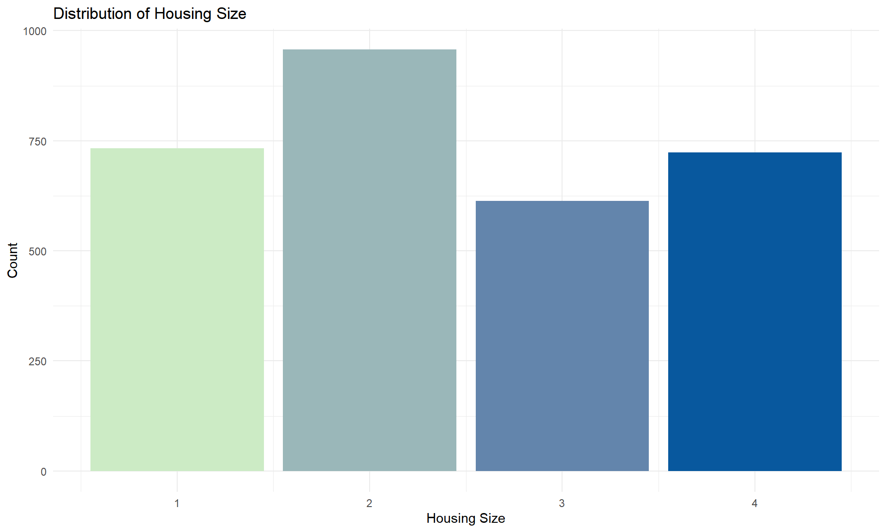
Just looking at the distribution of housing sizes, we see that it’s most common for households to have a size of 2, with size 4+ or 1 the second most frequent, and a size of 3 having the lowest frequency. Since household sizes of 4 and more are represented by only one variable, it’s difficult to tell what the breakdown of household sizes are within that variable.
Numeric Variable Correlation
Category purchase frequency correlation
# numeric variables that start with "freq"
freq_data <- train_data %>%
select(where(is.numeric)) %>%
select(contains("freq"), q.amazon.use.hh.size.num)
# correlation matrix
cor_matrix <- cor(freq_data, use = "pairwise.complete.obs")
# long format for ggplot
cor_long <- as.data.frame(as.table(cor_matrix))
ggplot(cor_long, aes(Var1, Var2, fill = Freq)) +
geom_tile(color = "white") +
scale_fill_gradient2(
low = "darkgreen",
high = "pink",
mid = "white",
midpoint = 0,
limit = c(-1, 1),
space = "Lab",
name = "Correlation"
) +
geom_text(aes(label = round(Freq, 2)), color = "black", size = 4) +
theme_minimal() +
theme(axis.text.x = element_text(angle = 45, vjust = 1, hjust = 1)) +
labs(title = "Correlation Matrix Heatmap (Freq Variables)", x = "", y = "")
ggsave("correlation_heatmap_freq.png", width = 12, height = 10, dpi = 300)Category spending correlation
# numeric variables that start with "spend"
spend_data <- train_data %>%
select(where(is.numeric)) %>%
select(contains("spend"), q.amazon.use.hh.size.num)
# correlation matrix
cor_matrix <- cor(spend_data, use = "pairwise.complete.obs")
# long format for ggplot
cor_long <- as.data.frame(as.table(cor_matrix))
ggplot(cor_long, aes(Var1, Var2, fill = Freq)) +
geom_tile(color = "white") +
scale_fill_gradient2(
low = "darkgreen",
high = "pink",
mid = "white",
midpoint = 0,
limit = c(-1, 1),
space = "Lab",
name = "Correlation"
) +
geom_text(aes(label = round(Freq, 2)), color = "black", size = 4) +
theme_minimal() +
theme(axis.text.x = element_text(angle = 45, vjust = 1, hjust = 1)) +
labs(title = "Correlation Matrix Heatmap (Spend Variables)", x = "", y = "")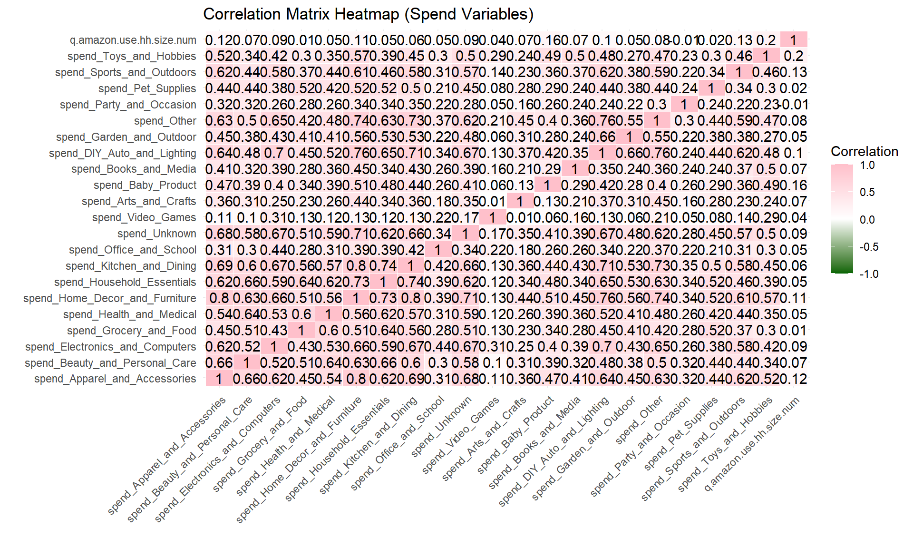
ggsave("correlation_heatmap_spend.png", width = 13, height = 10, dpi = 300)Misc. leftover numeric variables
numeric_data <- train_data %>%
select(where(is.numeric)) %>%
select(
-contains("freq"),
-contains("spend"),
q.amazon.use.hh.size.num
)
# correlation matrix
cor_matrix <- cor(numeric_data, use = "pairwise.complete.obs")
# long format for ggplot
cor_long <- as.data.frame(as.table(cor_matrix))
ggplot(cor_long, aes(Var1, Var2, fill = Freq)) +
geom_tile(color = "white") +
scale_fill_gradient2(
low = "darkgreen",
high = "pink",
mid = "white",
midpoint = 0,
limit = c(-1, 1),
space = "Lab",
name = "Correlation"
) +
geom_text(aes(label = round(Freq, 2)), color = "black", size = 4) +
theme_minimal() +
theme(axis.text.x = element_text(angle = 45, vjust = 1, hjust = 1)) +
labs(title = "Correlation Matrix Heatmap (Numeric Variables)", x = "", y = "")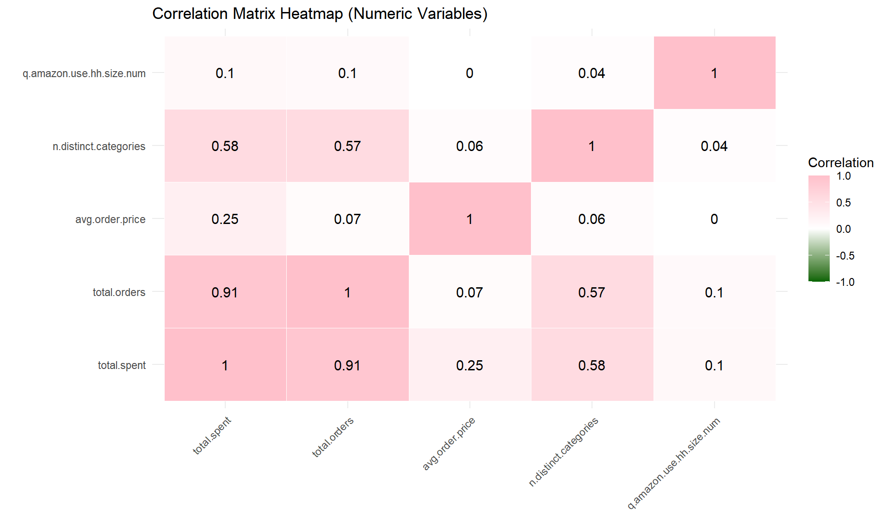
ggsave("correlation_heatmap_orders.png", width = 12, height = 10, dpi = 300)Location
ggplot(train_data, aes(y = fct_rev(fct_infreq(shipping.address.state)))) +
geom_bar(fill = "#7ec17bff") +
labs(
title = "Distribution of Shipping Address",
y = "Shipping Address State"
)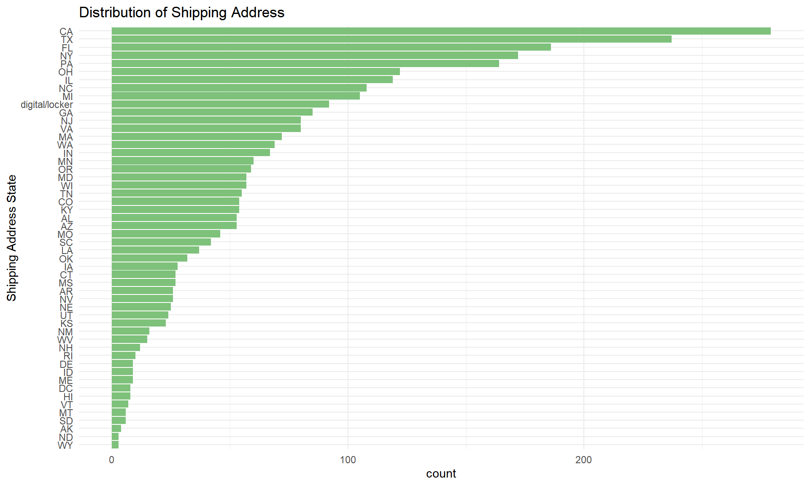
ggsave("distr_shipping_address.png", width = 12, height = 10, dpi = 300)
# diff attempt at plotting per-state distr of hhsize
state_order <- train_data %>%
group_by(shipping.address.state) %>%
summarize(prop_size_1 = mean(q.amazon.use.hh.size.num == 1)) %>%
arrange(desc(prop_size_1)) %>% # Use desc(prop_size_2) if you want top-to-bottom
pull(shipping.address.state)
train_data |>
mutate(shipping.address.state = factor(shipping.address.state, levels = state_order)) |>
ggplot(aes(
x = shipping.address.state,
fill = q.amazon.use.hh.size.num,
group = as.factor(q.amazon.use.hh.size.num)
)) +
geom_bar(position = position_fill(reverse = TRUE)) +
scale_fill_gradient(low = "#ccebc5", high = "#08589e") +
coord_flip() +
labs(y = "Proportion", x = "Shipping Address", fill = "HH Size")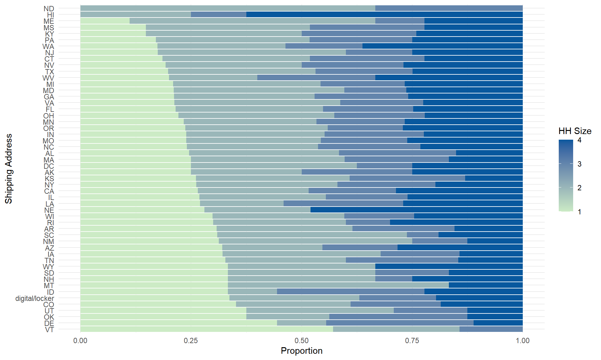
ggsave("hhsize_by_state_address.png", width = 12, height = 10, dpi = 300)Product Categories
# plot high correlated cat frequencies against hhsize
ggplot(
train_data |> filter(freq_Toys_and_Hobbies > 0),
aes(
x = q.amazon.use.hh.size.num,
y = spend_Toys_and_Hobbies,
color = q.amazon.use.hh.size.num,
group = as.factor(q.amazon.use.hh.size.num)
)
) +
geom_jitter(alpha = 0.5) +
scale_color_gradient(low = "#8ea888ff", high = "#08589e") +
labs(
color = "HH Size",
x = "HH Size"
)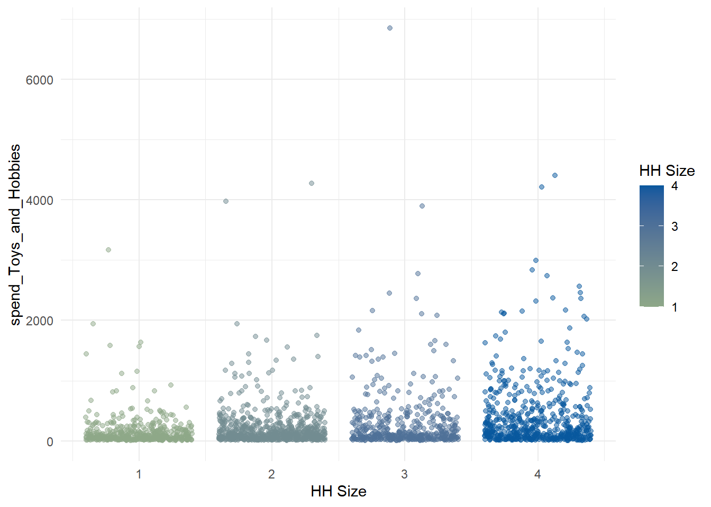
ggsave("hhsize_by_spend_toys.png", width = 12, height = 10, dpi = 300)
ggplot(
data |> filter(freq_Baby_Product > 0),
aes(
x = q.amazon.use.hh.size.num,
y = spend_Baby_Product,
color = q.amazon.use.hh.size.num,
group = as.factor(q.amazon.use.hh.size.num)
)
) +
geom_jitter(alpha = 0.5) +
scale_color_gradient(low = "#8ea888ff", high = "#08589e") +
labs(
color = "HH Size",
x = "HH Size"
)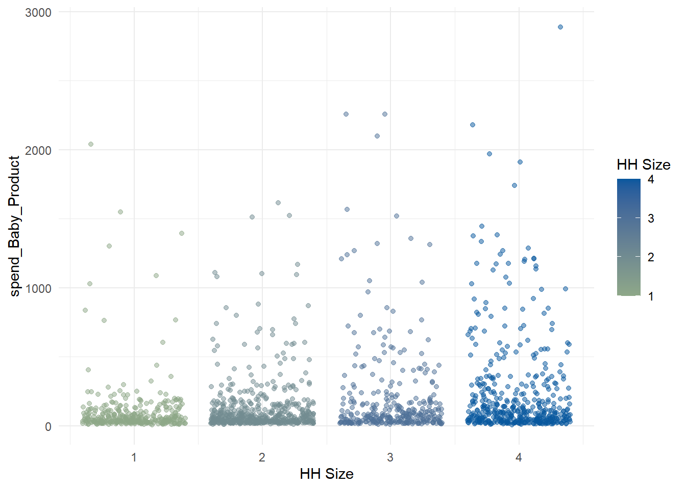
ggsave("hhsize_by_spend_baby.png", width = 12, height = 10, dpi = 300)Gender
ggplot(data, aes(fill = q.demos.gender, x = q.amazon.use.hh.size.num, group = as.factor(q.demos.gender))) +
geom_bar(position = "dodge") +
scale_fill_brewer(palette = "Purples") +
labs(title = "Housing Size vs. Gender ", x = "Household Size")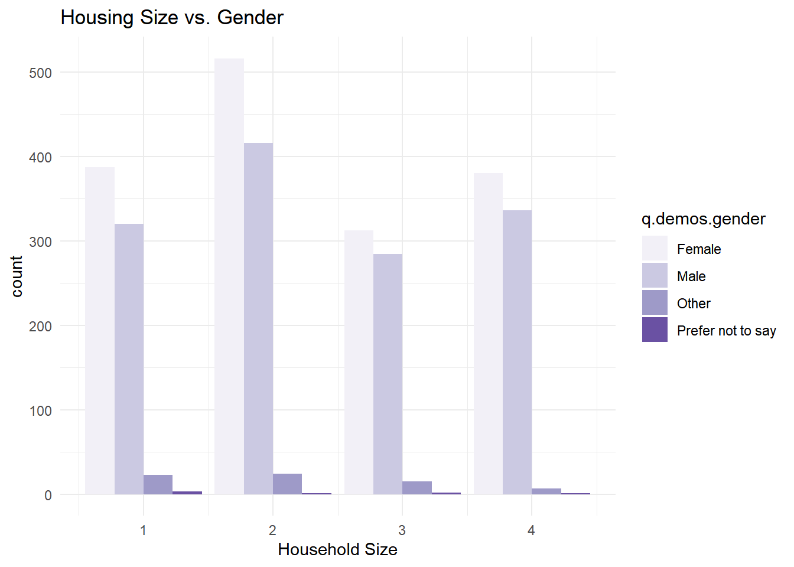
ggsave("hhsize_by_gender.png", width = 12, height = 10, dpi = 300)Model Evaluation and Tuning
load("processed_data_train.RData")
train_data <- train_data |> select(!c(survey.response.id, starts_with("spend_")))
# defining the task
housing_tsk <- as_task_regr(train_data, target = "q.amazon.use.hh.size.num")
## spliting training and test data
set.seed(101)
split <- partition(housing_tsk, ratio = 0.8)
train_idx <- split$train
test_idx <- split$test
# measures
measures <- list(msr("regr.rmse"), msr("regr.mse"))XGBoost Model 1
# learner
lrn_xgboost1 <- as_learner(
po("encode", method = "one-hot") %>>%
lrn(
"regr.xgboost",
eta = to_tune(1e-4, 1, logscale = TRUE),
max_depth = to_tune(1, 10),
colsample_bytree = to_tune(1e-1, 1),
colsample_bylevel = to_tune(1e-1, 1),
lambda = to_tune(1e-3, 1e3, logscale = TRUE),
alpha = to_tune(1e-3, 1e3, logscale = TRUE),
subsample = to_tune(1e-1, 1)
)
)
# 5-fold cv
resampling1 <- rsmp("cv", folds = 5)
# terminate at 5 evals
terminator1 <- trm("evals", n_evals = 5)
# grid search tuner
tuner_gs = tnr("grid_search")
#auto tuner
at_xgboost1 <- auto_tuner(
learner = lrn_xgboost1,
resampling = resampling1,
measure = msr("regr.rmse"), # evaluate by the rmse value
terminator = terminator1,
tuner = tuner_gs
)
# train the model
# commented out the below lines to prevent knitting from taking too long
# we extracted the best parameters and made a duplicate model with the best paramters set
# at_xgboost1$train(housing_tsk, row_ids = train_idx)
# store the best parameters
# best_param1 <- at_xgboost1$tuning_result
tuned_lrn_xgboost1 <- as_learner(
po("encode", method = "one-hot") %>>%
lrn(
"regr.xgboost",
eta = exp(-5.116856),
max_depth = 3,
colsample_bytree = 0.8,
colsample_bylevel = 0.6,
lambda = exp(3.837642),
alpha = exp(-0.7675284),
subsample = 1
)
)
# train the model
set.seed(101)
tuned_lrn_xgboost1$train(housing_tsk, row_ids = train_idx)
# predict on train indecies
preds1 <- tuned_lrn_xgboost1$predict(housing_tsk, row_ids = test_idx)
# obtain score
preds1$score(measures)regr.rmse regr.mse
1.081812 1.170318 # regr.rmse regr.mse
# 1.081812 1.170318
## code to create predictions on the 2000 observations of test data
# test_predict <- tuned_lrn_xgboost1$predict_newdata(test_data)
# testing <- test_predict$response
# submit <- data.frame(ids, testing)
# str(submit)
# colnames(submit) <- c("Survey.ResponseID", "Q.amazon.use.hh.size.num")
# library(data.table)
# write_csv(submit, "submit.csv")
# extract variable importance
importance_scores <- tuned_lrn_xgboost1$importance()
# variable importance plot
ggplot(
data = data.frame(var = names(importance_scores), value = importance_scores) |>
dplyr::arrange(desc(value)) |>
dplyr::slice(1:15)
) +
ggtitle("XGBoost Model Top 15 Variable Importance Plot") +
geom_point(aes(x = value, y = reorder(var, value))) +
ylab("variable") +
xlab("importance")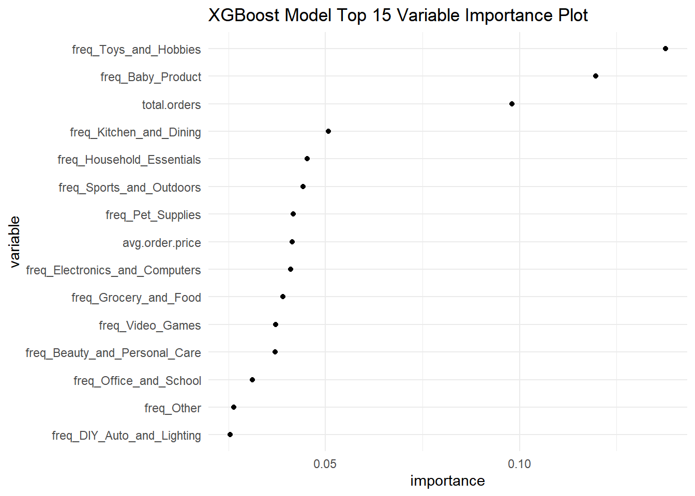
# lime visual
X_test <- housing_tsk$data(
rows = test_idx,
cols = housing_tsk$feature_names
)
y_test <- housing_tsk$data(
rows = test_idx,
cols = housing_tsk$target_names
)[[1]]
pred_fun <- function(model, newdata) {
model$predict_newdata(newdata)$response
}
predictor <- Predictor$new(
model = tuned_lrn_xgboost1,
data = X_test,
y = y_test,
predict.function = pred_fun
)
# pick some interesting test points (rows within X_test)
example_ids <- c(1, 20)
set.seed(101)
# see their predictions for context
tuned_lrn_xgboost1$predict_newdata(X_test[example_ids, ])
── <PredictionRegr> for 2 observations: ────────────────────────────────────────
row_ids truth response
1 NA 3.035510
2 NA 2.135257set.seed(101)
# LocalModel = LIME-style local surrogate
loc_1 <- LocalModel$new(predictor, x.interest = X_test[example_ids[1], ], k = 5)
loc_2 <- LocalModel$new(predictor, x.interest = X_test[example_ids[2], ], k = 5)
# plots: contribution of top features for each case
plot(loc_1)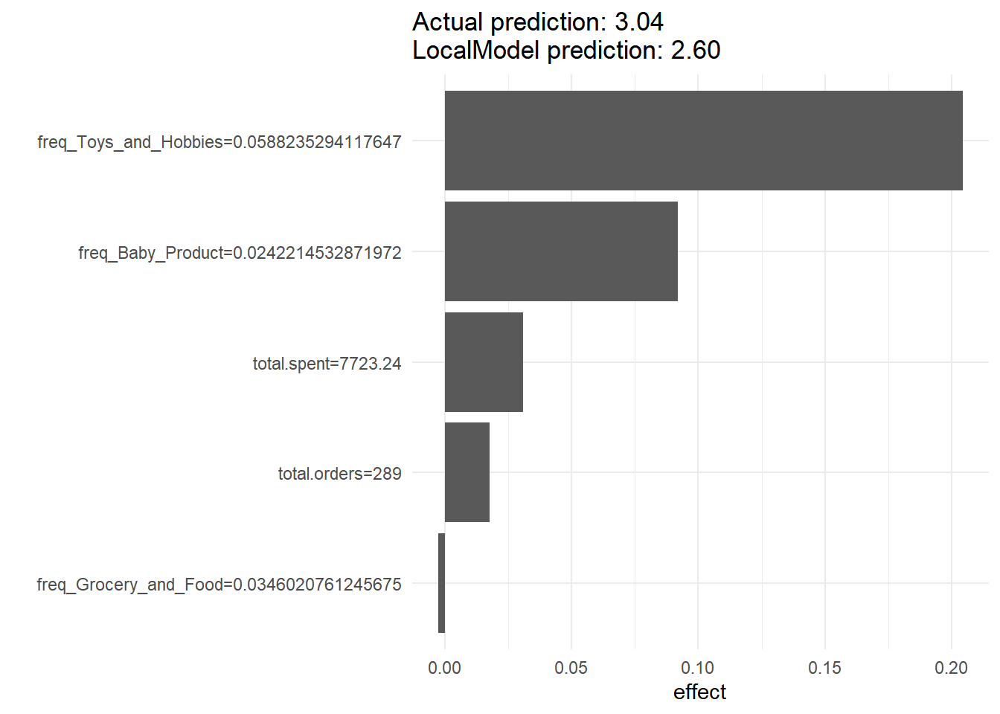
plot(loc_2)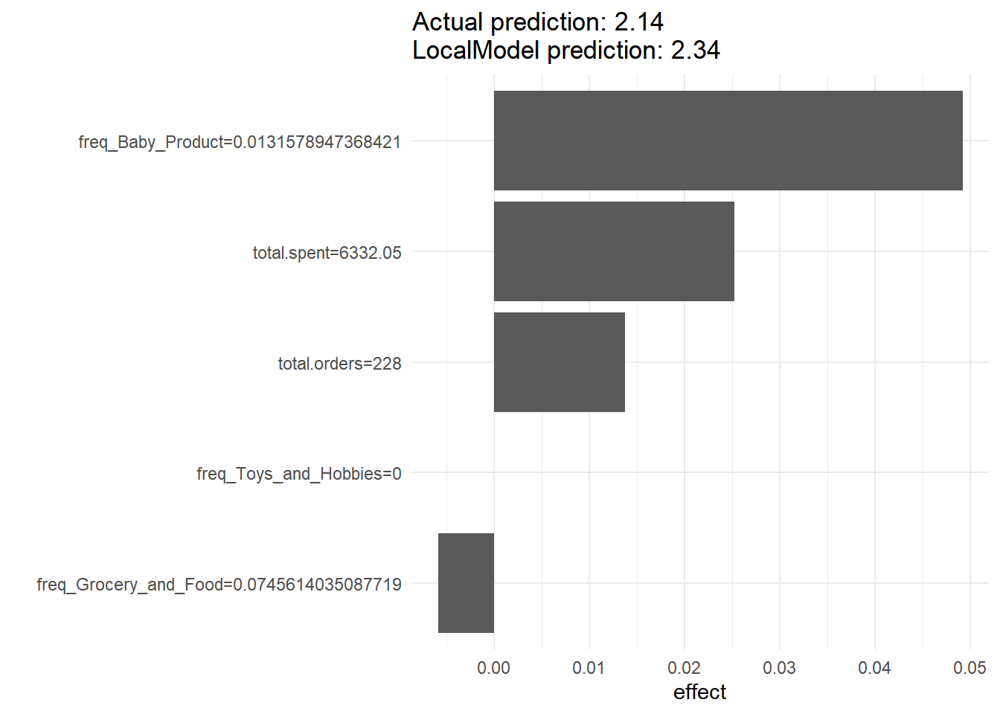
Random Forest Model 1
## manually changed the parameters to reduce time waiting to tune the model
lrn_rf1 <- lrn(
"regr.ranger",
num.trees = 618,
mtry = 4,
min.node.size = 11,
sample.fraction = 0.8449092,
importance = "impurity"
)
## train the model
set.seed(101)
lrn_rf1$train(housing_tsk, row_ids = train_idx)
## predict on test indicies
preds2 <- lrn_rf1$predict(housing_tsk, row_ids = test_idx)
preds2$score(measures)regr.rmse regr.mse
1.076661 1.159199 # regr.rmse regr.mse
# 1.076661 1.159199
# getting importance values
importance <- lrn_rf1$importance()
class(importance) # should be "numeric"[1] "numeric"# str(importance)
# importance values as a dataframe for plotting
vip_df <- data.frame(
variable = names(importance),
importance = as.numeric(importance)
)
# sort by importance, descending
vip_df <- vip_df[order(-vip_df$importance), ]
# plot
ggplot(vip_df[1:15, ], aes(x = reorder(variable, importance), y = importance)) +
geom_bar(stat = "identity") +
coord_flip() +
labs(
title = "Top 15 Most Important Variables (Random Forest)",
x = "Predictor",
y = "Impurity-based Importance"
) +
theme_minimal()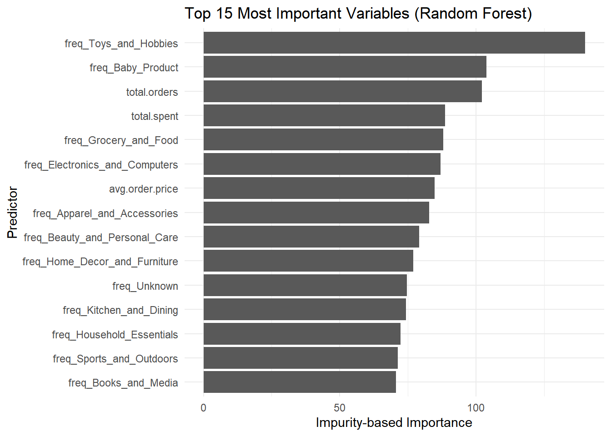
# lime visuals
predictor <- Predictor$new(
model = lrn_rf1,
data = X_test,
y = y_test,
predict.function = pred_fun
)
# pick some interesting test points (rows within X_test)
example_ids <- c(1, 20)
# see their predictions for context
set.seed(101)
lrn_rf1$predict_newdata(X_test[example_ids, ])
── <PredictionRegr> for 2 observations: ────────────────────────────────────────
row_ids truth response
1 NA 3.117842
2 NA 2.166861set.seed(101)
# LocalModel = LIME-style local surrogate
loc_1 <- LocalModel$new(predictor, x.interest = X_test[example_ids[1], ], k = 5)
loc_2 <- LocalModel$new(predictor, x.interest = X_test[example_ids[2], ], k = 5)
# plots: contribution of top features for each case
plot(loc_1)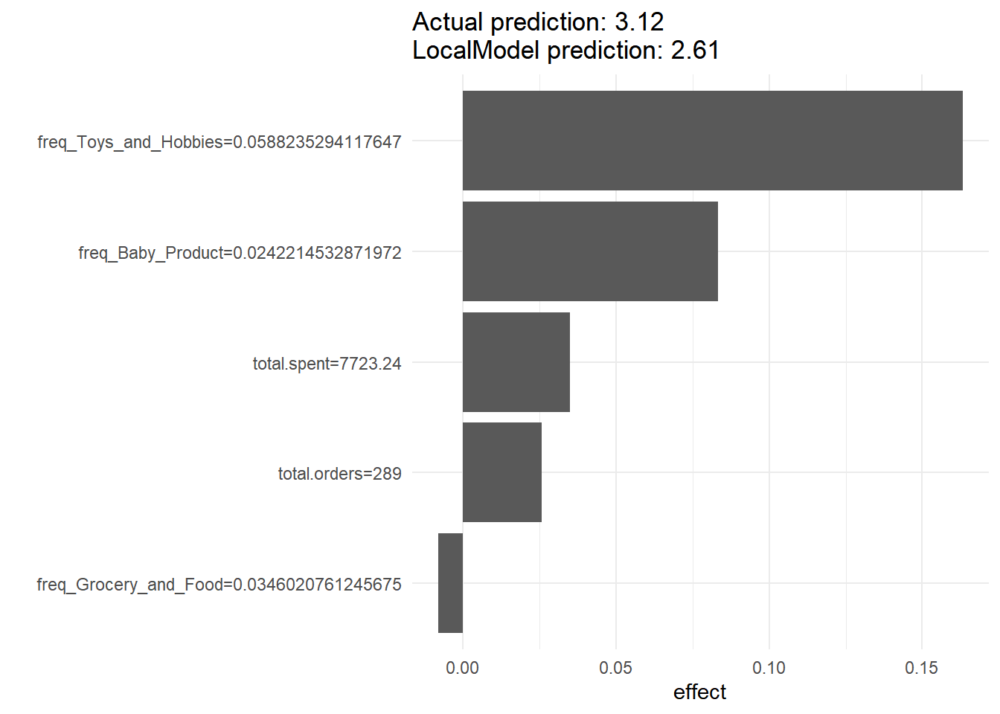
plot(loc_2)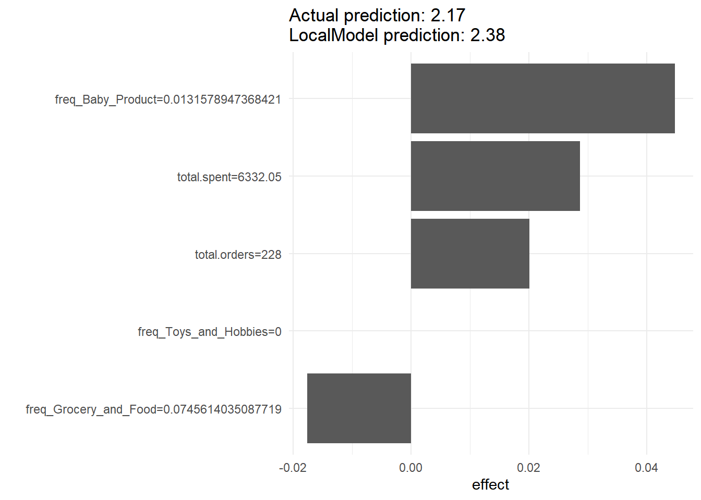
NEW DATA VARIABLES
load("processed_data_train.RData")
data <- train_data |> select(-survey.response.id)
# defining the task
tsk_hhsize <- as_task_regr(data, target = "q.amazon.use.hh.size.num", id = "amazon_hh_size")Final Model: XGBoost Model 2
lrn_xgb <- as_learner(
po("encode", method = "one-hot") %>>%
lrn(
"regr.xgboost",
eta = to_tune(1e-4, 1, logscale = TRUE),
max_depth = to_tune(1, 15),
colsample_bytree = to_tune(0.1, 1),
subsample = to_tune(0.1, 1),
lambda = to_tune(1e-3, 1e3, logscale = TRUE),
alpha = to_tune(1e-3, 1e3, logscale = TRUE)
)
)
set.seed(13)
plan(list(
tweak("multisession", workers = 3),
tweak("multisession", workers = 3)
))
instance = ti(
task = tsk_hhsize,
learner = lrn_xgb,
resampling = rsmp("cv", folds = 5),
measure = msr("regr.rmse"),
terminator = trm("evals", n_evals = 60)
)
## commenting the below code out to save time for knitting
# tuner_rs$optimize(instance)
## extract best params, fit and train final model
# best_params <- instance$result_learner_param_vals
xgb_tune4 <- as_learner(
po("encode", method = "one-hot") %>>%
lrn(
"regr.xgboost",
eta = 0.007055363,
max_depth = 4,
colsample_bytree = 0.319908,
subsample = 0.369098,
lambda = exp(-1.05846993385),
alpha = exp(0.73788139955)
)
)
set.seed(13)
hhsize_split <- partition(tsk_hhsize, ratio = 0.7)
train_idx2 <- hhsize_split$train
test_id2 <- hhsize_split$test
xgb_tune4$train(tsk_hhsize, row_ids = hhsize_split$train)
# var importance plot sanity check
as_tibble(xgb_tune4$importance(), rownames = "var") |> ggplot() + geom_point(aes(y = reorder(var, value), x = value))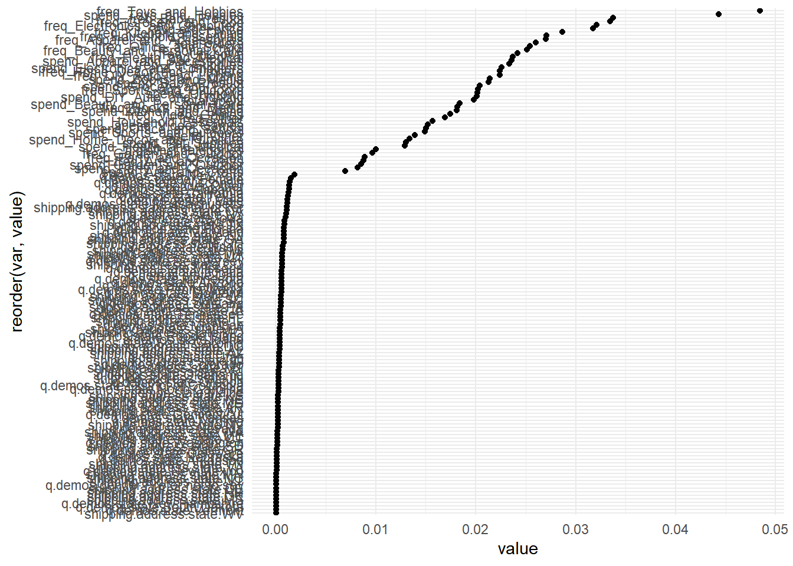
# evaluate on test set
preds <- xgb_tune4$predict(tsk_hhsize, row_ids = hhsize_split$test)
preds$score(c(msr("regr.rmse"), msr("regr.mae"), msr("regr.mse")))regr.rmse regr.mae regr.mse
1.0487332 0.8917467 1.0998414 # regr.rmse regr.mae regr.mse
# 1.0438824 0.8887537 1.0896904
# lime visuals
X_test <- tsk_hhsize$data(
rows = test_id2,
cols = tsk_hhsize$feature_names
)
y_test <- tsk_hhsize$data(
rows = test_id2,
cols = tsk_hhsize$target_names
)[[1]]
predictor <- Predictor$new(
model = xgb_tune4,
data = X_test,
y = y_test,
predict.function = pred_fun
)
# pick some interesting test points (rows within X_test)
example_ids <- c(1, 20)
# see their predictions for context
set.seed(101)
xgb_tune4$predict_newdata(X_test[example_ids, ])
── <PredictionRegr> for 2 observations: ────────────────────────────────────────
row_ids truth response
1 NA 2.512735
2 NA 3.108597set.seed(101)
# LocalModel = LIME-style local surrogate
loc_1 <- LocalModel$new(predictor, x.interest = X_test[example_ids[1], ], k = 5)
loc_2 <- LocalModel$new(predictor, x.interest = X_test[example_ids[2], ], k = 5)
# plots: contribution of top features for each case
plot(loc_1)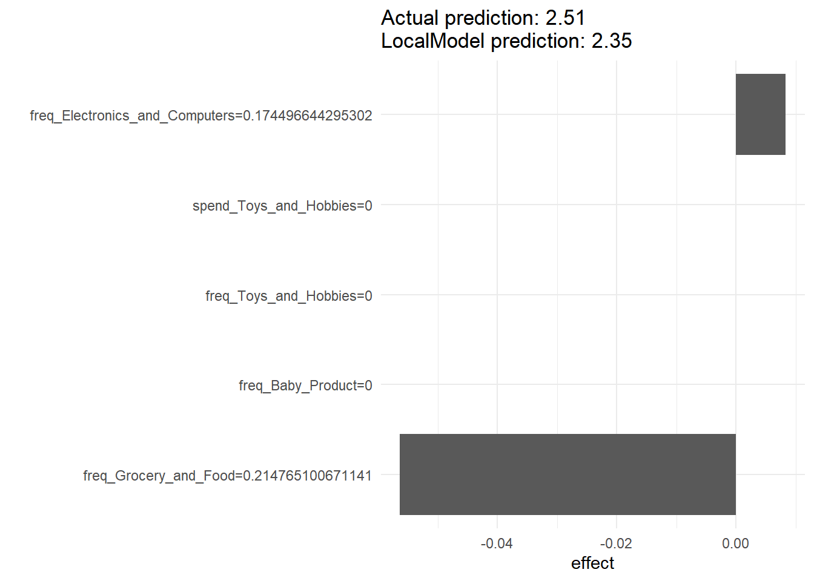
plot(loc_2)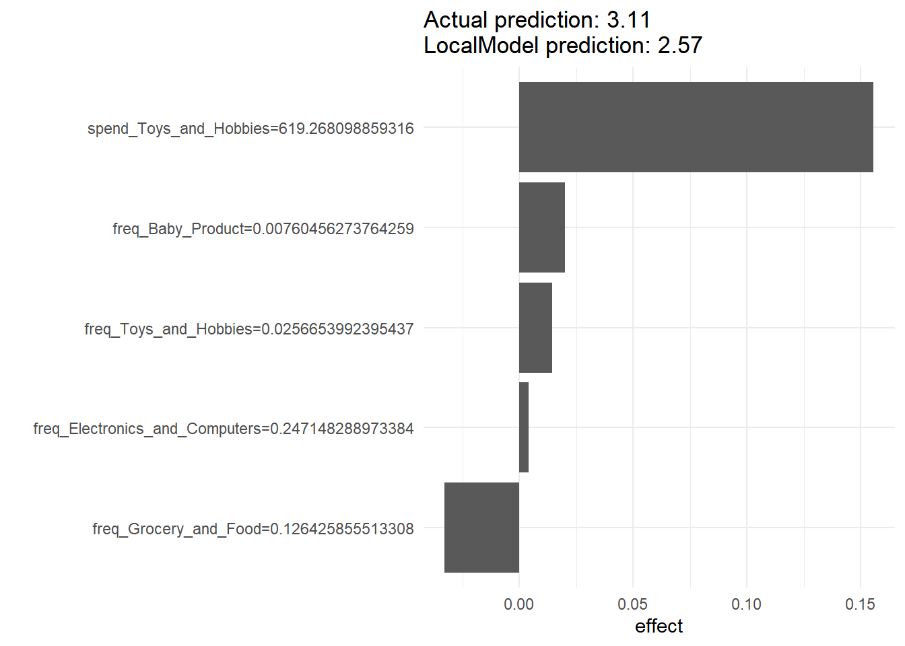
comparing models w/ xgb1
tuned_lrn_xgboost1$id <- "tuned_lrn_xgboost1"
lrn_rf1$id <- "lrn_rf1"
xgb_tune4$id <- "xgb_tune4"
learners_to_compare <- list(tuned_lrn_xgboost1, lrn_rf1, lrn("regr.featureless"), xgb_tune4)
rsmp_cv5 <- rsmp("cv", folds = 5)
bmr_design <- benchmark_grid(
tasks = housing_tsk,
learners = learners_to_compare,
resamplings = rsmp_cv5
)
# running the actual benchmark experiment
set.seed(101)
bmr <- benchmark(design = bmr_design)INFO [23:54:18.034] [mlr3] Applying learner 'tuned_lrn_xgboost1' on task 'train_data' (iter 1/5)
INFO [23:54:18.432] [mlr3] Applying learner 'tuned_lrn_xgboost1' on task 'train_data' (iter 2/5)
INFO [23:54:18.828] [mlr3] Applying learner 'tuned_lrn_xgboost1' on task 'train_data' (iter 3/5)
INFO [23:54:23.927] [mlr3] Applying learner 'tuned_lrn_xgboost1' on task 'train_data' (iter 4/5)
INFO [23:54:24.046] [mlr3] Applying learner 'tuned_lrn_xgboost1' on task 'train_data' (iter 5/5)
INFO [23:54:24.941] [mlr3] Applying learner 'lrn_rf1' on task 'train_data' (iter 1/5)
INFO [23:54:26.772] [mlr3] Applying learner 'lrn_rf1' on task 'train_data' (iter 2/5)
INFO [23:54:28.556] [mlr3] Applying learner 'lrn_rf1' on task 'train_data' (iter 3/5)
INFO [23:54:29.556] [mlr3] Applying learner 'lrn_rf1' on task 'train_data' (iter 4/5)
INFO [23:54:29.674] [mlr3] Applying learner 'lrn_rf1' on task 'train_data' (iter 5/5)
INFO [23:54:30.418] [mlr3] Applying learner 'regr.featureless' on task 'train_data' (iter 1/5)
INFO [23:54:30.954] [mlr3] Applying learner 'regr.featureless' on task 'train_data' (iter 2/5)
INFO [23:54:31.478] [mlr3] Applying learner 'regr.featureless' on task 'train_data' (iter 3/5)
INFO [23:54:31.613] [mlr3] Applying learner 'regr.featureless' on task 'train_data' (iter 4/5)
INFO [23:54:31.737] [mlr3] Applying learner 'regr.featureless' on task 'train_data' (iter 5/5)
INFO [23:54:31.866] [mlr3] Applying learner 'xgb_tune4' on task 'train_data' (iter 1/5)
INFO [23:54:31.995] [mlr3] Applying learner 'xgb_tune4' on task 'train_data' (iter 2/5)
INFO [23:54:32.737] [mlr3] Applying learner 'xgb_tune4' on task 'train_data' (iter 3/5)
INFO [23:54:35.924] [mlr3] Applying learner 'xgb_tune4' on task 'train_data' (iter 4/5)
INFO [23:54:36.055] [mlr3] Applying learner 'xgb_tune4' on task 'train_data' (iter 5/5)bmr_rmse <- bmr$aggregate(measures = msr("regr.rmse"))[, c("learner_id", "regr.rmse")]
bmr_rmse[, c("learner_id", "regr.rmse")] learner_id regr.rmse
<char> <num>
1: tuned_lrn_xgboost1 1.042073
2: lrn_rf1 1.044457
3: regr.featureless 1.099632
4: xgb_tune4 1.037201bmr_rmse learner_id regr.rmse
<char> <num>
1: tuned_lrn_xgboost1 1.042073
2: lrn_rf1 1.044457
3: regr.featureless 1.099632
4: xgb_tune4 1.037201# visualizing benchmark results
autoplot(bmr, measure = msr("regr.rmse")) + scale_y_log10()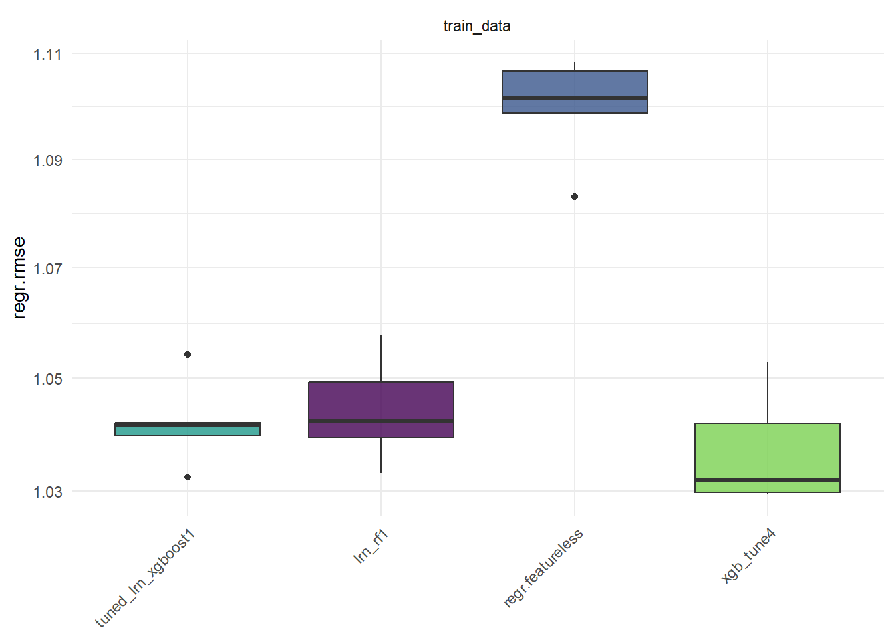